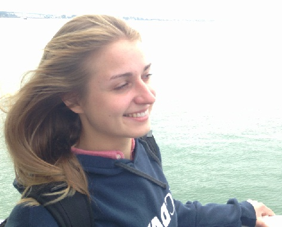

<table border="0" cellpadding="1" cellspacing="1" height="1264" width="100%">
    <tbody>
        <tr>
            <td bgcolor="#ffffcc" class="mt-bgcolor-ffffff" style="vertical-align:middle;">
            <p style="text-align: center;">&nbsp;</p>

            <p></p>

            <p>&nbsp;</p>
            </td>
            <td class="mt-bgcolor-ffffff">&nbsp;</td>
            <td bgcolor="#ffffcc" class="mt-bgcolor-ffffff" valign="top"><a href="mailto:dlarsen@ucdavis.edu"><span class="mt-color-993300"><strong><span style="font-size:large;">Prof. Delmar S. Larsen</span></strong></span></a>
            <p>Ph.D <a href="http://www.uchicago.edu/">University of Chicago</a> 2001 <span id="1232488772096S" style="display:none;">&nbsp;</span><br />
            BS <a href="http://www.washington.edu/">University of Washington</a> 1995<br />
            HFSP Postdoctoral Fellow, <a href="http://www.vu.nat.nl/">Free University of Amsterdam (Biophysics)</a> Amsterdam 2001-2004<br />
            HFSP Postdoctoral Fellow, <a href="http://www.usc.edu/">University of Southern California (Chemistry)</a> Los Angeles 2004-2005</p>

            <p>Assistant Professor, UC Davis 2005-2012</p>

            <p>Associate Professor, UC Davis 2012-present</p>
            </td>
            <td bgcolor="#ffffcc" class="mt-bgcolor-ffffff" valign="top">&nbsp;</td>
            <td bgcolor="#ffffcc" class="mt-bgcolor-ffffff" valign="top">&nbsp;</td>
        </tr>
        <tr>
            <td bgcolor="#ffffcc" class="mt-bgcolor-ffffcc" style="vertical-align:middle;text-align:center;">&nbsp;</td>
            <td class="mt-bgcolor-ffffcc">&nbsp;</td>
            <td bgcolor="#ffffcc" class="mt-bgcolor-ffffcc" valign="top">
            <p class="style7"><font color="#003399"><strong><a href="mailto:dmadsen@ucdavis.edu"><span style="color:rgb(128, 0, 0);"><span style="font-size:large;">Dr. Dorte Madsen</span></span></a></strong></font></p>

            <p class="style7 style8">Ph.D. <a href="http://www.au.dk/en/" target="_top">University of Aarhus</a> 2002<br />
            MS <a href="http://www.au.dk/en/" target="_top">University of Aarhus</a> 1998<br />
            Postdoctoral Research Fellow, 2006-present</p>

            <p><em>Project</em>: DAQ Programming and Support</p>

            <ul>
                <li style="text-align: justify;"><strong>A Flexible LED-based Broadband Transient-Absorption Spectrometer</strong>, Sean M. Gottlieb, Scott C. Corley, Dorte Madsen, and Delmar S. Larsen, <em>Review of Scientific Instruments</em>, 83, 056107 (<strong>2012</strong>). <a href="http://dx.doi.org/10.1063/1.4712634" title="http://dx.doi.org/10.1063/1.4712634">pdf</a></li>
                <li style="text-align: justify;"><strong>A Single Source Femtosecond-Millisecond Broadband Spectrometer</strong>, Elizabeth Carroll, Melissa P. Hill, Dorte Madsen, Konstantin Malley, and Delmar S. Larsen <em>Review of Scientific Instruments</em> 80, 026102&nbsp;<strong>(2009).</strong><a href="http://dx.doi.org/10.1063/1.3070516" name="love+" target="_new">pdf</a></li>
                <li style="text-align: justify;"><strong>Ultrafast Carrier Dynamics in Exfoliated and Functionalized Calcium Niobate Nanosheets in Water and Methanol</strong>, Elizabeth Carroll, Owen Compton, Dorte Madsen, Frank Osterloh, Delmar Larsen, <em>J</em><em>ournal of Physical Chemistry C</em>, 112, 2394-2403 <strong>(2008)</strong>. <a href="http://dx.doi.org/10.1021/jp077427d" name="love+" target="_new"> pdf</a></li>
            </ul>
            </td>
            <td bgcolor="#ffffcc" class="mt-bgcolor-ffffcc" valign="top">&nbsp;</td>
            <td bgcolor="#ffffcc" class="mt-bgcolor-ffffcc" valign="top">&nbsp;</td>
        </tr>
        <tr>
            <td bgcolor="#ffffcc" class="mt-bgcolor-ffffff">
            <p>&nbsp;</p>

            <p style="text-align: center;"></p>

            <p style="text-align: center;">&nbsp;</p>
            </td>
            <td class="mt-bgcolor-ffffff">&nbsp;</td>
            <td bgcolor="#ffffcc" class="mt-bgcolor-ffffff" valign="top">
            <p style="text-align: justify;"><a href="mailto:jkirpich@ucdavis.edu" title="mailto:jkirpich@ucdavis.edu"><font color="#003399"><strong><span style="color:rgb(128, 0, 0);"><span style="font-size:large;">Julia Kirpich</span></span></strong></font></a></p>

            <p style="text-align: justify;">Graduate Student Researcher, 2014-present<br />
            <a href="http://bph.ucdavis.edu/" title="http://bph.ucdavis.edu/">Biophysics&nbsp;Graduate Group</a>, Chem&nbsp;Annex 0450<br />
            BS Physics, emphasis in Biophysics.<a href="http://www.bsu.by/en/main.aspx" title="http://www.bsu.by/en/main.aspx">&nbsp;Belarusian State University</a>&nbsp;2013</p>

            <p class="style7 style8" style="text-align: justify;"><em>Project</em>:&nbsp;Characterizing the photo-induced Activity of Bilin-binding<a href="DelWiki/Cyanobacteriochromes_and_Phytochromes/Moorea_producens" title="Moorea producens"> Cyanobacteriochrome and Phytochrome Photoreceptors</a></p>

            <ul>
                <li class="mt-align-justify">Reverse Photodynamics of the Noncanonical Red/Green NpR3784 Cyanobacteriochrome from <em>Nostoc puntiforme</em>, Julia S. Kirpich, L. Tyler Mix, Sean M. Gottlieb, Che-Wei Chang,&nbsp;Shelley Martin,&nbsp;J. Clark Lagarias, and Delmar S. Larsen Biochemistry, 58 (18), 2307-2306&nbsp;(<strong>2019</strong>). <a href="https://pubs.acs.org/doi/10.1021/acs.biochem.8b01275" title="https://pubs.acs.org/doi/10.1021/acs.biochem.8b01275">pdf</a></li>
                <li class="mt-align-justify">Forward Photodynamics of the Noncanonical Red/Green NpR3784 Cyanobacteriochrome from <em>Nostoc puntiforme</em>, Julia S. Kirpich, L. Tyler Mix, Sean M. Gottlieb, Che-Wei Chang,&nbsp;Shelley Martin,&nbsp;J. Clark Lagarias, and Delmar S. Larsen <i>Biochemistry</i>, 58 (18), 2297-2317(<strong>2019</strong>). <a href="https://pubs.acs.org/doi/10.1021/acs.biochem.8b01274" title="https://pubs.acs.org/doi/10.1021/acs.biochem.8b01274">pdf</a></li>
                <li class="mt-align-justify">Protonation Heterogeneity Modulates the Ultrafast Photocycle Initiation Dynamics of Phytochrome Cph1, Julia S. Kirpich,&nbsp;L. Tyler Mix,&nbsp;Shelley S. Martin, Nathan C. Rockwell, J. Clark Lagarias, and Delmar S. Larsen,&nbsp;<em>J. Phys. Chem. Lett.,</em>&nbsp;9, 3454-3462<em>&nbsp;</em>(<strong>2018</strong>). <a href="https://pubs.acs.org/doi/abs/10.1021/acs.jpclett.8b01133" title=" https://pubs.acs.org/doi/abs/10.1021/acs.jpclett.8b01133">pdf</a></li>
                <li>Noncanonical&nbsp; Photodynamics of the Orange/Green Cyanobacteriochrome Power Sensor NpF2164g7 from the PtxD Phototaxis Regulator of <em>Nostoc punctiforme</em>, Julia S. Kirpich, Che-Wei Chang, Dorte Madsen, Sean M. Gottlieb, Shelley S. Martin, Nathan C. Rockwell, J. Clark Lagarias, and Delmar S. Larsen, <i>Biochemistry, </i>57, 2636-2648&nbsp;(<strong>2018</strong>). <a href="https://pubs.acs.org/doi/pdf/10.1021/acs.biochem.7b01252" title="https://pubs.acs.org/doi/pdf/10.1021/acs.biochem.7b01252">pdf</a></li>
                <li>Bifurcation in the Ultrafast Dynamics of the Photoactive Yellow Proteins from <em>Leptospira biflexa </em>and <em>Halorhodospira halophila</em>, L. Tyler&nbsp;Mix, Julia&nbsp;Kirpich, Masato Kumauchi, Mikas Vengris, Wouter&nbsp;Hoff, and&nbsp;Delmar S. Larsen, <em>Biochemistry, </em>55&nbsp;(44), 6138–6149 <em>(<strong>2016</strong>). </em><a href="http://pubs.acs.org/doi/abs/10.1021/acs.biochem.6b00547" title="http://pubs.acs.org/doi/abs/10.1021/acs.biochem.6b00547">pdf</a></li>
            </ul>
            </td>
            <td bgcolor="#ffffcc" class="mt-bgcolor-ffffff" valign="top">&nbsp;</td>
            <td bgcolor="#ffffcc" class="mt-bgcolor-ffffff" valign="top">&nbsp;</td>
        </tr>
        <tr>
            <td class="mt-bgcolor-ffffcc">
            <p></p>
            </td>
            <td class="mt-bgcolor-ffffcc" style="vertical-align:top;">&nbsp;</td>
            <td class="mt-bgcolor-ffffcc" valign="top">
            <p style="text-align:justify"><a href="mailto:admjenkins@ucdavis.edu" title="admjenkins@ucdavis.edu"><font color="#003399"><strong><span style="color:#800000;"><span style="font-size:large;">Adam Jenkins</span></span></strong></font></a></p>

            <p style="text-align:justify">Graduate Student Researcher, Nov 2017-present<br />
            <a href="http://chemistry.ucdavis.edu/" title="http://chemistry.ucdavis.edu/">Chemistry Department</a>, Chem Annex 0450<br />
            BS Chemistry <a href="https://www.ucdavis.edu/" title="https://www.ucdavis.edu/">UC Davis</a>&nbsp;2016</p>

            <p class="style7 style8" style="text-align:justify"><em>Project</em>: Cyanobacteriochromes&nbsp;and Rhodopsin&nbsp;Mimics&nbsp;</p>

            <ul>
                <li class="style7 style8" style="text-align: justify;">Conservation and Diversity in the Secondary Forward Photodynamics of Red/Green Cyanobacteriochromes, Adam J. Jenkins, Sean M. Gottlieb, Che-Wei Chang, Randeep J. Hayer, Shelley S. Martin, J. Clark Lagarias and Delmar S. Larsen, Photochemical Photobiological Sciences <i>18,</i>&nbsp;2539–2552&nbsp;(<strong>2019</strong>). <a href="https://pubs.rsc.org/en/Content/ArticleLanding/2019/PP/C9PP00295B#!divAbstract" title="https://pubs.rsc.org/en/Content/ArticleLanding/2019/PP/C9PP00295B#!divAbstract">pdf</a></li>
                <li class="style7 style8" style="text-align: justify;">Ultrafast Spintronics with the Photoisomerization-Induced Spin-Charge Excited State (PISCES) Mechanism in Spirooxazine-based Photomagnetic Materials,&nbsp;Jenkins, Adam; Mao , Ziliang ; Kurimoto, Aiko; Mix, L. Tyler; Frank, Natia; Delmar S. Larsen,&nbsp;<em><em>Journal of Physical Chemistry Letters,</em></em>&nbsp;9, 5351–5357&nbsp;<em><em>&nbsp;</em></em>(<strong><strong>2018</strong></strong>).&nbsp;<a href="https://pubs.acs.org/doi/10.1021/acs.jpclett.8b02166" title="https://pubs.acs.org/doi/10.1021/acs.jpclett.8b02166">pdf</a></li>
            </ul>
            </td>
            <td class="mt-bgcolor-ffffcc" valign="top">&nbsp;</td>
            <td class="mt-bgcolor-ffffcc" valign="top">&nbsp;</td>
        </tr>
    </tbody>
</table>
